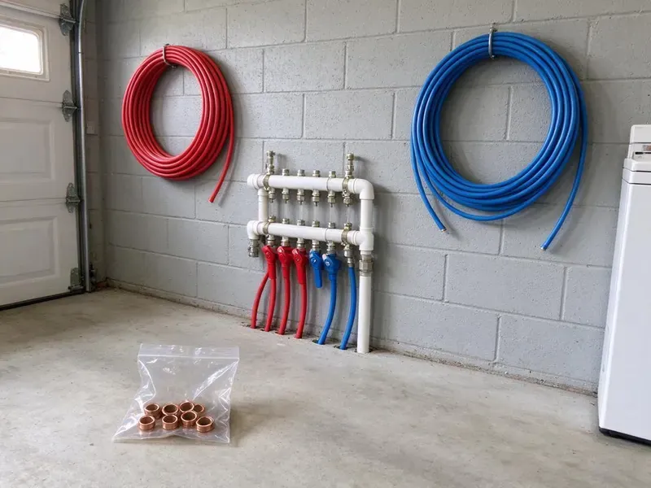

Gas Line Installation in Houma, LA
When you need new gas line installation for your Houma, LA home or business, count on Beau's Plumbing. Our licensed plumbers handle everything from planning to final connection.
- Every Joint Pressure Tested
- Upfront Pricing
- Safety First
- Prompt, Reliable Service

Get a Gas Line Sized Right and Installed to Code in Houma, LA.
Contact us for a free estimate on your gas line installation project.
Gas Line Installation in Houma, LA for Indoor and Outdoor Appliances
At Beau's Plumbing, we understand the critical importance of proper gas line installation. Our experienced team provides complete service, from initial assessment and pipe sizing to trenching and connection, for a reliable and secure gas supply to your Houma property.
Our expertise includes:
- Propane to natural gas conversions
- Install new gas lines for ranges, dryers and water heaters.
- Perform gas line extensions for fire pits and standby generators.

Additional Plumbing Installation Services in Houma, LA
We install water heaters, pumps, lines, and fixtures across Houma, LA with precision workmanship that meets every local code.


Customers
Why Choose Beau's Plumbing for Gas Line Installation in Houma, LA?
Gas line work demands precision and adherence to strict safety protocols. Our team is trained and equipped to handle every part of gas piping safely and effectively.
- Experienced Team, Our plumbers have extensive experience with many gas piping materials and installation scenarios.
- Sized Correctly, We calculate BTU demand and pipe length so every appliance runs at full rated output.
- Louisiana Code Compliant, All our gas line installations adhere to Louisiana plumbing codes and safety standards, providing peace of mind.
Citywide Coverage
We are dedicated to providing reliable gas line services across the entire Houma area. Our local knowledge helps us handle city requirements and finish projects on time.
Experienced Team
Each technician undergoes continuous training on the latest gas piping technologies and safety standards. This expertise ensures your gas line installation is done right the first time.
Safety-First Approach
Safety is our top priority on every gas line installation in Houma. We conduct thorough inspections and leak tests to confirm the integrity of your new gas system before it is put into service.
Trusted Certified Houma Plumbing Services Professionals
At Beau's Plumbing, we take pride in providing certified plumbing services throughout Houma, LA. Backed by recognized industry credentials, our experienced plumbers combine technical skill with genuine customer care. Whether it is repair, installation, or maintenance, we follow strict safety and quality standards to deliver long-lasting results you can trust.
Call Us Now PHCC Plumbing Contractor Recognition
PHCC Plumbing Contractor Recognition Better Business Bureau (BBB) Accreditation
Better Business Bureau (BBB) Accreditation Angi Certified Pro
Angi Certified Pro ISO 9001 Quality Management Certification
ISO 9001 Quality Management CertificationReliable Gas Line Installation Services in Houma, LA
Natural Gas & Propane Line Services in Houma
We install gas lines for both natural gas and propane systems. While the piping itself can be similar, the pressure and regulatory requirements differ. Our experts know the standards for each, so your new gas line is right for your fuel source and safely installed. We make sure your Houma property has the proper gas delivery system.

CSST Flexible Gas Piping in Houma, LA
Corrugated stainless steel tubing installs faster than black iron and routes easily through attics and finished walls with fewer joints. It is a good option for remodels and additions where opening walls is costly. Hurricanes and tropical storms are a major concern in Louisiana, bringing heavy rain, floodwater, and power outages that affect plumbing. CSST must be bonded to the home's grounding system to reduce lightning damage risk. We use brands with fittings our plumbers are certified to install and follow the manufacturer's instructions.
Outdoor Kitchen and BBQ Gas Lines in Houma
Built-in grills, side burners and pizza ovens are a favorite part of backyard living. We trench from the house to the island and install yellow polyethylene gas pipe with tracer wire, transitioning to steel above grade with an approved riser. Each appliance gets an accessible shutoff valve. We bury the line to code depth and protect it where it crosses landscaping or irrigation.
New Gas Appliance Hookups in Houma
Adding a new gas range, dryer or water heater needs a dedicated gas line. Our plumbers can install new black iron pipe or corrugated stainless steel tubing, known as CSST, from your main gas supply to your new appliance. We make sure of proper pipe sizing for adequate gas flow and perform all necessary connections and pressure tests for a safe, functional setup in your Houma home.
Commercial Gas Line Installation in Houma
Restaurants, laundromats and light industrial spaces need gas piping sized for high-demand equipment like fryers, ovens, dryers and rooftop units. We install schedule 40 black iron or approved commercial systems, add regulators where elevated pressure is supplied and coordinate inspections. Work can be scheduled outside business hours to prevent downtime. Final documentation is provided for your landlord, insurer or local fire official.
Fire Pit and Fireplace Gas Line Installation in Houma, LA
Gas fire pits and fireplaces add comfort on cool evenings without the smoke and ash of wood. We run a properly sized line, install a key valve or shutoff and connect the burner assembly. Fire features need proper clearance from structures and plants, and we confirm placement before installation. Propane systems are set up with the correct regulator and burner orifice.
Outdoor Gas Line Extensions in Houma, LA
Upgrade your outdoor living space with a new gas line for a grill, fire pit or patio heater. We specialize in extending gas lines safely outdoors, using durable, corrosion-resistant materials rated for outdoor use. Humid air causes sweating pipes and toilet tanks, and that moisture can rot subfloors and framing if leaks go unnoticed. Our installations include proper trenching, secure connections and adherence to all outdoor gas line codes in Houma, LA, so your outdoor amenities are ready to enjoy.

Gas Water Heater and Tankless Line Upgrades in Houma, LA
Tankless water heaters often need up to 199,000 BTU, far more than the 40,000 BTU a typical tank heater uses. Many existing 1/2 inch lines cannot supply that demand, which causes error codes and lukewarm water. We calculate the full house load and upsize the line to 3/4 inch or larger as needed. This upgrade is one of the most critical steps in a successful tankless conversion.
Gas Line Installation Near Me in Houma, LA
We are a local team that installs gas lines in Houma regularly, so we know how inspections are scheduled and what inspectors expect. That helps your project move quickly from install to approval. You also get a plumber who can return quickly if you add appliances later.
If you are searching for 'gas line installation near me' in Houma, look no further than Beau's Plumbing. Our local team is ready to provide expert gas piping services right at your doorstep. We are known for quick response times and quality workmanship.
Beau's Plumbing at a Glance
- Fully licensed plumbing team covering Houma, LA
- Same-day appointments and 24/7 emergency response
- Upfront, flat-rate pricing before work begins
- 4.8-star rated by 578+ Louisiana customers
Houma Map
Houma Information
- Population
- 31,733
- Area codes
- 985/504/225
- Service area
- Houma and communities within 40 miles
- Nearby
- Kenner, Marrero, Metairie, Prairieville
Humid air causes sweating pipes and toilet tanks, and that moisture can rot subfloors and framing if leaks go unnoticed. Properly installed gas lines help keep appliances in Houma, LA homes running safely through extreme heat, cold snaps and everything in between.
Expert Services
Trust our professionals for reliable Beau's Plumbing solutions in Houma, LA.
Our Specialized Plumbing Services in Houma, LA
At Beau's Plumbing, we provide a complete range of plumbing services across Houma, LA. From leak detection to full system installations, our team ensures fast, precise, and affordable service for both residential and commercial properties. Explore our core services below:


How Our Gas Line Installation Process Works in Houma, LA
We follow a careful, step-by-step process on every gas line so your system is safe and ready for inspection.
Request a Quote
Call (504) 317-6869 and tell us which appliances you are adding and where they will go. We schedule a visit to measure the run and check your meter size.
Permit and Install
We pull the permit, then install the piping, shutoffs and sediment traps to code. Underground lines get tracer wire and proper burial depth.
Test and Connect
We pressure test the system, pass inspection and connect your appliance. Then we light it, check the flame and confirm there are no leaks.
Frequently Asked Questions About Gas Line Installation in Houma
The cost for gas line installation in Houma typically ranges from $500 to $2,500, depending on the length of the run, the pipe material, black iron or CSST, and the complexity of the installation. A simple hookup for a single appliance is usually on the lower end, while long runs or multiple connections cost more. We provide transparent, upfront pricing after an on-site assessment.
Beau's Plumbing stands behind our work with a comprehensive warranty on our gas line installations. This usually covers workmanship for a set period and may include manufacturer warranties on materials. Specific warranty details will be provided with your project estimate.
We use schedule 40 black iron, CSST flexible tubing and yellow polyethylene for underground runs. The choice is based on location, code requirements and the appliance.
We primarily install black iron pipe and corrugated stainless steel tubing, or CSST. Black iron is a traditional, rigid option, while CSST offers flexibility and faster installation. Both are safe and code-compliant when installed by licensed professionals, and the choice usually depends on the application and property layout.
Not always. We add up the BTU ratings of all your appliances and compare them to your meter and main line capacity, then reach out to your utility if an upgrade is needed.
A rotten egg or sulfur smell, a hissing sound near a line or appliance, and dead vegetation over a buried line are red flags. If you smell gas, leave the home and call your gas utility right away.
Gas line installation is extremely dangerous and should only be performed by licensed professionals. Improper installation can lead to gas leaks, explosions, fires and carbon monoxide poisoning. It also voids warranties and often fails local inspections, so it is not a DIY project.
Yes, gas line installation almost always requires a permit and inspection. We handle the permit and inspection scheduling on your behalf.
What People Are Saying About Our Plumbing Experts?

Robert G.
The trenchless sewer replacement saved our front yard. They walked us through the camera inspection footage first so we knew exactly what we were paying for.
Sewer Line Replacement · Houma, LA
Emily R.
I called Beau's Plumbing for plumbing repair, and the technician was fast, polite, and thorough. They explained the problem clearly and fixed it the same day. I will definitely hire them again. Highly recommended!
Plumbing Repair · Houma, LA
Patricia H.
We had a slab leak that two other companies could not find. Beau's Plumbing located it in under an hour, explained our options, and the price matched the quote to the dollar.
Slab Leak Repair · Metairie, LA
Mark T.
When our office needed drain cleaning, Beau's Plumbing provided quick, reliable service. The plumber arrived on time and made sure every drain flowed perfectly before leaving. Very satisfied.
Drain Cleaning · New Orleans, LA
Laura S.
I scheduled a water heater replacement, and the team made the process smooth and affordable. The new unit works perfectly, and they cleaned up after completing the job.
Water Heater Replacement · Kenner, LASofia M.
Two new toilets installed in one visit, no mess left behind, and the tech even adjusted a faucet he noticed was dripping. Fair pricing and really friendly.
Toilet Installation · Houma, LA